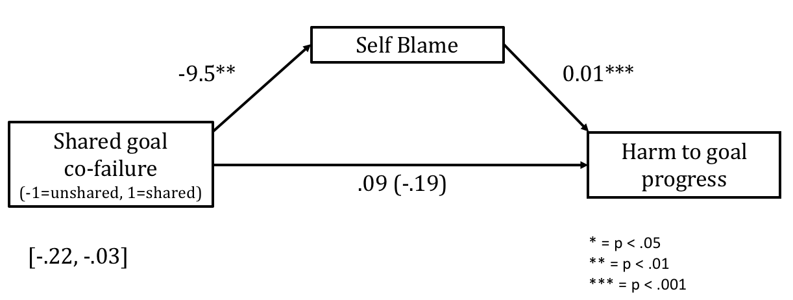

Joint self-control failures: Sharing goals with peers diminishes feelings of goal failure
Writer: Brooke Schleyer
Date: Fall 2018
Citation: Schleyer, B., Dominick, J.K. & Cole, S. (2018). Joint self-control failures: Sharing goals with peers diminishes feelings of goal failure Rutgers Research Review, 3(1).
I am a Psychology major in the SAS class of 2018. Over the past few years I have conducted research with the Regulation Action and Motivated Perception Lab led by Dr. Shana Cole. One topic I have been interested in studying is how social experiences can impact peoples’ ability to effectively manage and pursue their long-term goals. As a first-generation student with ambitious academic goals, I am often reminded of the distracting social atmosphere of college life, so this topic pertains to me personally. My future aspirations are to pursue a post-baccalaureate research position and then obtain a PhD in clinical psychology.
In their daily lives, people often face challenges that threaten their long-term goal pursuits. For example, someone with goals to lose weight may be craving an unhealthy dessert rather than a healthier choice. When these two motives battle for prioritization, one that favors a long-term goal (e.g., weight loss) and another that favors a short-term temptation (e.g., enjoying tasty foods), a prototypical self-control dilemma occurs (Mischel, 1974; Trope & Fishbach, 2000; Fishbach & Converse, 2010). A self-control “failure” occurs when a person chooses to give in to the temptation that may impede progress towards a long-term goal (e.g., having the dessert) (Fishbach & Shen, 2014).
Following such indulgences, people often experience adverse emotions, such as guilt and regret (Carver & Scheier, 1998). However, the severity of peoples’ emotional experiences may be impacted by the extent they take responsibility for their choice to indulge in the first place (McGraw, 1987). Specifically, the more self-blame someone attributes to themselves for a behavior, the guiltier they tend to feel (McGraw, 1987). Thus, we reasoned that the social context may impact the extent to which people blame themselves for their behavior and the extent that people actually perceive their goal inconsistent actions as personal failures.
“Co-failure”–indulging with someone—is one specific aspect of the social context that may dampen the experience of self-control failure. Co-failure occurs when an individual and a peer indulge in a temptation together (Lowe & Haws, 2014). Previous research has found that co-failure leads to social bonding and minimizes negative feelings about the failure (Lowe & Haws, 2014; Kline & Cole, in prep). This previous research on co-failure has assumed that both peers hold a common goal from which they are deviating. However no research has explored which outcomes occur if individuals give in to temptations in the presence of a peer who does not hold the same active goals (i.e., co-“indulgence” but not co-“failure”). Understanding whether the specifics of the social dynamic impact the extent to which people take responsibility for their choices can provide insight on how complex social contexts influence an individual’s reflections on their behaviors.
In the present research, we explored how sharing or not sharing a goal with a peer during a joint self-control failure impacts the extent to which people hold themselves accountable for their actions. We hypothesized that when both individuals shared the goal, participants would feel warranted to shift greater blame onto their peer (since their peer is also “failing”). We also predicted they would take less personal responsibility for their own actions, minimizing the extent that they reported “failing” at their goal.
Methods
In exchange for monetary compensation ($0.65), 238 Amazon Mechanical Turk workers with dieting goals participated in an online study (Mean age = 37.80 years, Standard Deviation = 13.07, 117 males, 120 females, and 1 did not report gender). Participants imagined a scenario in which they experienced a self-control dilemma between choosing a healthy meal or giving in to a craving for cheesy fries. Participants imagined that they all ultimately gave in to the temptation. Participants were randomly assigned to one of three conditions:
- Shared goal co-failure (N = 67): Participants gave in to the temptation with a friend who was also on a diet.
- Unshared goal co-failure (N = 87): Participants gave in to the temptation with a friend who was not on a diet.
- Solo-failure (N = 84): Participants gave in to the temptation alone.
Participants then reported the extent to which they and others were to blame for the decision to eat cheesy fries. Participants distributed the percentage of blame summing to 100% for “myself” or “others.” Blame was computed by subtracting the total other-blame measure from the total self-blame measure. Higher numbers indicate that participants attributed more blame to themselves overall. Next, participants indicated the extent to which their action would negatively impact their goal progress from 0 (not at all detrimental to goal progress) to 10 (extremely detrimental to goal progress).
Results
We first assessed whether condition influenced the extent to which participants blamed themselves for their actions. There was a significant difference between conditions on self-blame, F(2, 233) = 13.80, p < .001. In other words, we rejected the null hypothesis: the observed differences between each group were significantly greater than would be expected by chance if the null hypothesis was true. Participants in the shared goal condition (M = 59.3, SD = 48.6) blamed themselves significantly less than those in the unshared condition (M = 78.3, SD = 30.5), p =.003 and less than those in the solo condition (M = 89.2, SD = 24.4), p < .001.
To explore if the extent to which participants blamed themselves then impacted the extent to which they felt their behavior negatively impacted their goal pursuit, we conducted a mediation analysis. A mediation analysis is a statistical tool that can explain and statistically test the relationship between the independent variable (e.g., condition) and the dependent variable (e.g., harm to goal progress) by assessing whether a mediator variable (e.g., self-blame) is responsible for the relationship. Though an F or t statistics can assess main effects of an independent variable on the dependent or mediator variable, a mediation model allows researchers to assess whether an independent variable impacts the dependent variable indirectly through its impact on the third variable. Our mediation model was significant, with 95% CI: [-.22, -.03]. Participants in the shared goal condition blamed themselves significantly less than those in the unshared goal condition, b = -9.5, SE = 3.2, p = .003, which then led them to think their behavior was less detrimental to their goal progress, b = .01, SE = .002, p < .001.

Figure 1. Mediation model testing blame as a mediator between condition and goal progress. Condition was coded as 1 = shared goal co-failure, -1 = unshared goal co-failure. **p < .01. ***p < .001. Participants in the shared goal condition blamed themselves significantly less than those in the unshared goal condition, and the extent that they blamed themselves then led them to think their behavior was less detrimental to their goal progress.
Discussion
This research suggests that sharing a goal with a peer during a joint self-control failure can minimize how much responsibility people take for their actions—sharing the goal made participants feel like the same behavior was less detrimental to their goal progress. This research contributes to existing literature by suggesting that co-failure not only leads to social bonding but also decreases feelings of personal responsibility. This was particularly true when individuals shared a long-term goal with their peer and thus were both “failing” together.
An important aspect of this research is that across all conditions the behavior itself was exactly the same. The only variant across conditions was the nature of the social context in which self-control failure was occurring. This implies that the same behavior can sometimes be perceived differently depending on the social context. Further, this research suggests that the situational context can impact the extent that people encode failures as failures. As monitoring of successes and failures over time is an essential aspect of successful self-regulation (Webb, Chang & Benn, 2013), this research suggests that co-failure experiences can impact peoples’ abilities to consistently track and manage goals over time.
Future research should seek to replicate and extend these findings within a real-world setting and across additional goal domains. For example, future research can explore how sharing an academic goal with a peer (e.g., studying for a test) impacts feelings of guilt following a choice that hinders academic success (e.g., watching Netflix instead of studying). Future research can also explore additional reasons why sharing versus not sharing a goal with a peer might impact perceptions of goal failure. For example, participants may report heightened bonding or greater similarity while co-failing with a peer who shares their goal.
People make goal-related choices in their daily lives. This research is one of the first to demonstrate that the same behavior can be construed differently across varying social situations. Overall, this research suggests that if people become aware that joint self-control failure can impact their emotional and cognitive responses to failure, people can be more adept at tracking their own goal-related behaviors in daily life.
References
- Fishbach, A., & Converse, B. A. (2010). Identifying and battling temptation. Handbook of Self-Regulation: Research, Theory and Applications, 2, 244-260.
- Fishbach, A., & Shen, L. (2014). The explicit and implicit ways of overcoming temptation. In Sherman, J. W., Gawronski, B., & Trope, Y. (Eds.), Dual Process Theories of the Social Mind. New York: Guilford Press.
- Kline, J. & Cole, S. (in prep). Co-failing at self-control.
- Lowe, M. L., & Haws, K. L. (2014). (Im) moral support: the social outcomes of parallel self-control decisions. Journal of Consumer Research, 41(2), 489-505.
- McGraw, K. (1987). Guilt following transgression: an attribution of responsibility approach. Journal of Personality and Social Psychology, 52(2), 247-256.
- Mischel, W. (1974). Processes in delay of gratification. In L. Berkowitz (Ed.), Advances in experimental social psychology (Vol. 7, pp. 249–292). New York: Academic.
- Trope, Y., & Fishbach, A. (2000). Counteractive self-control in overcoming temptation. Journal of Personality and Social Psychology, 79, 493–506.
- Webb, T., Chang, B. & Benn, Y. (2013). The ostrich problem: motivated avoidance or rejection of information about goal progress. Social and Personality Psychology Compass, 7(11), 794-807.